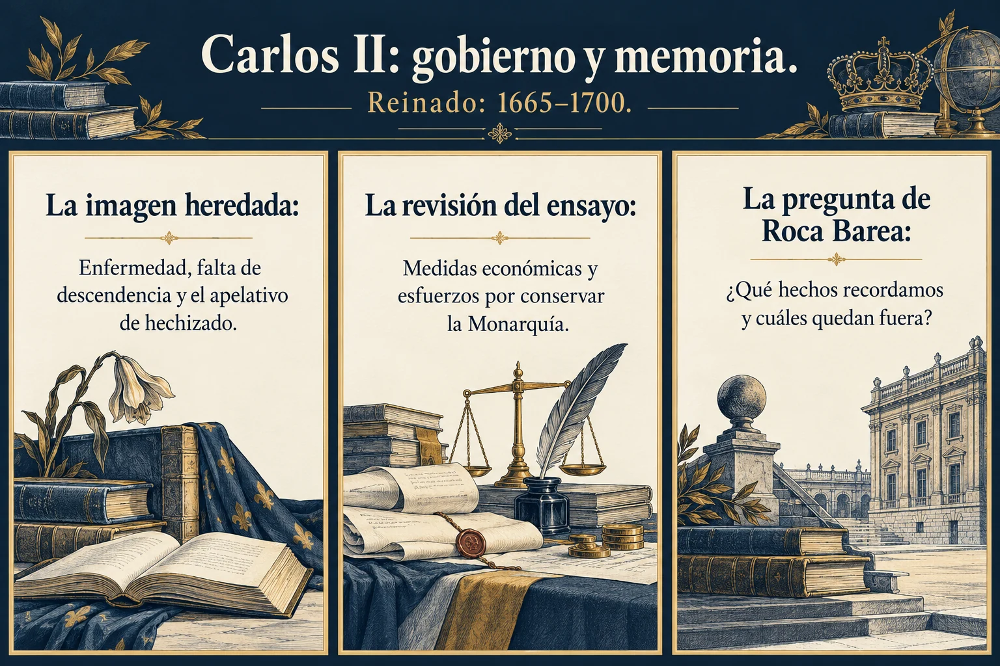
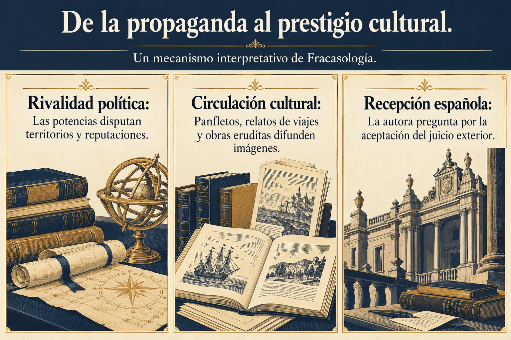
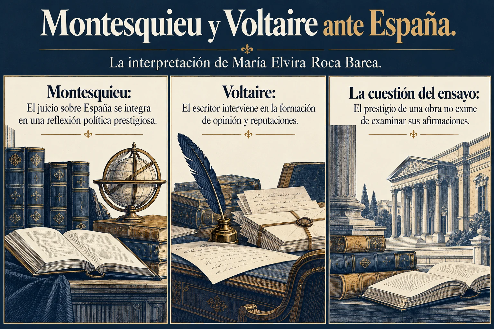
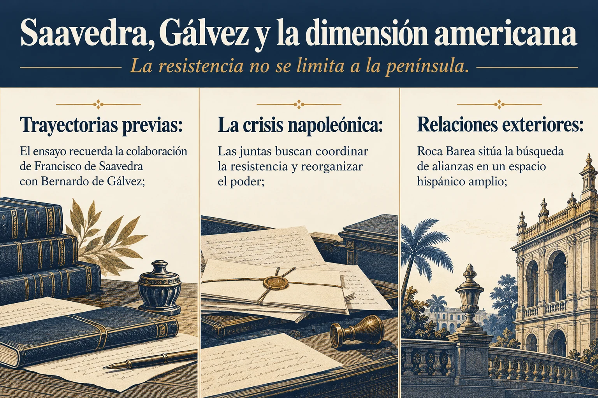
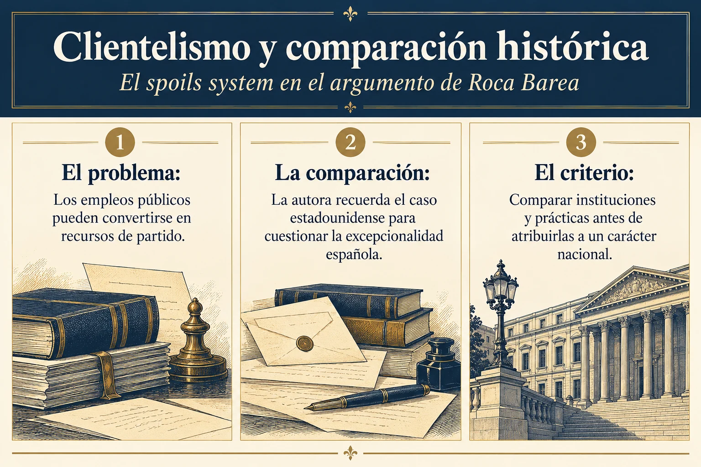
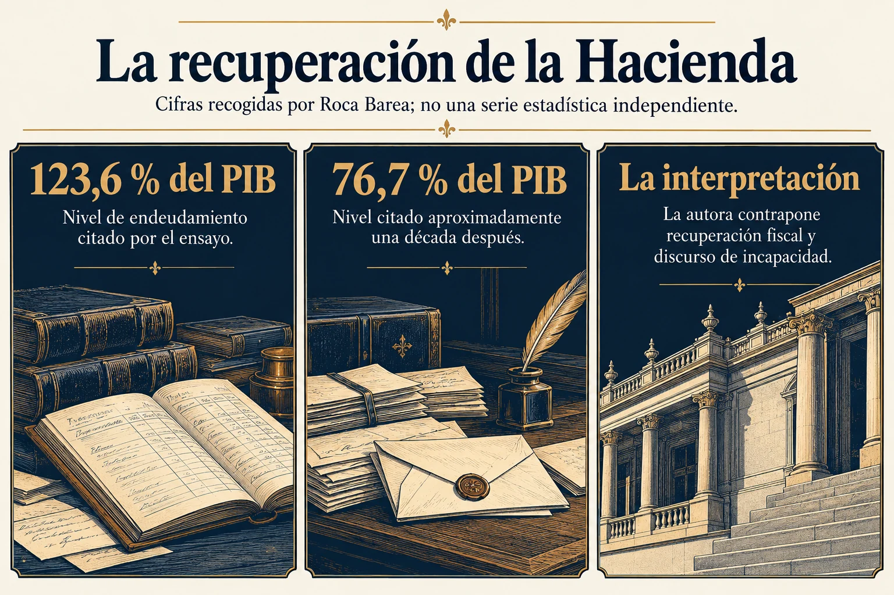
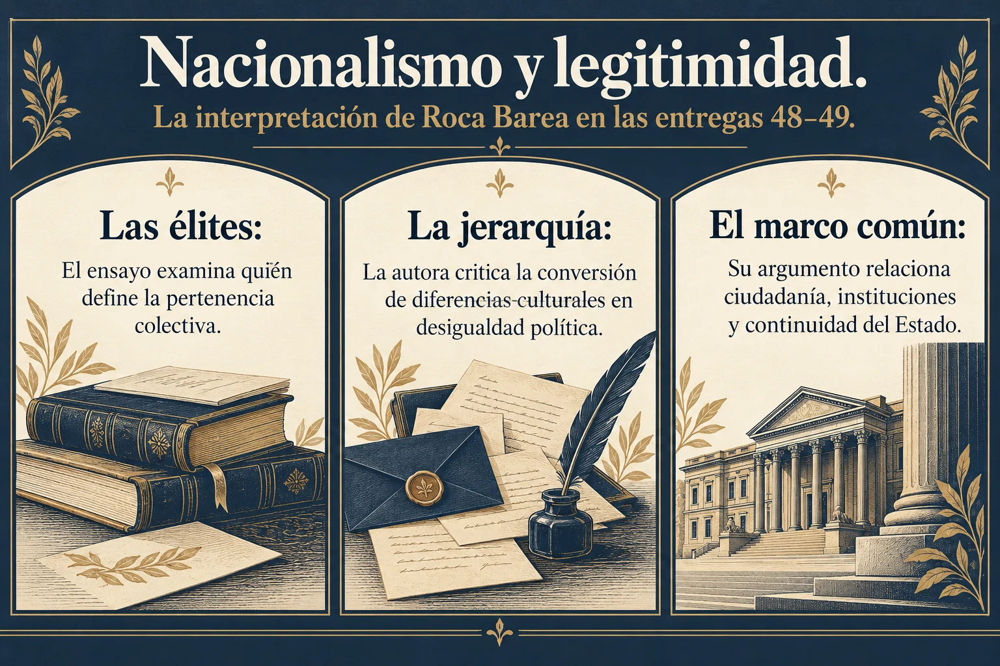
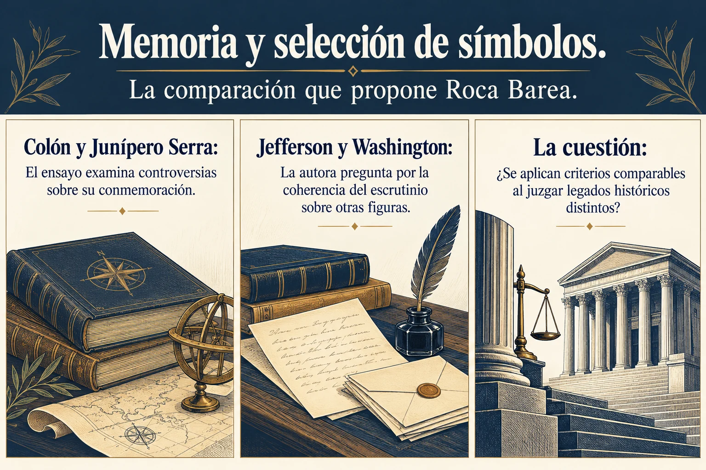
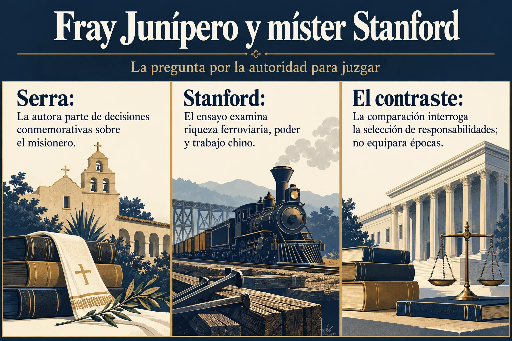
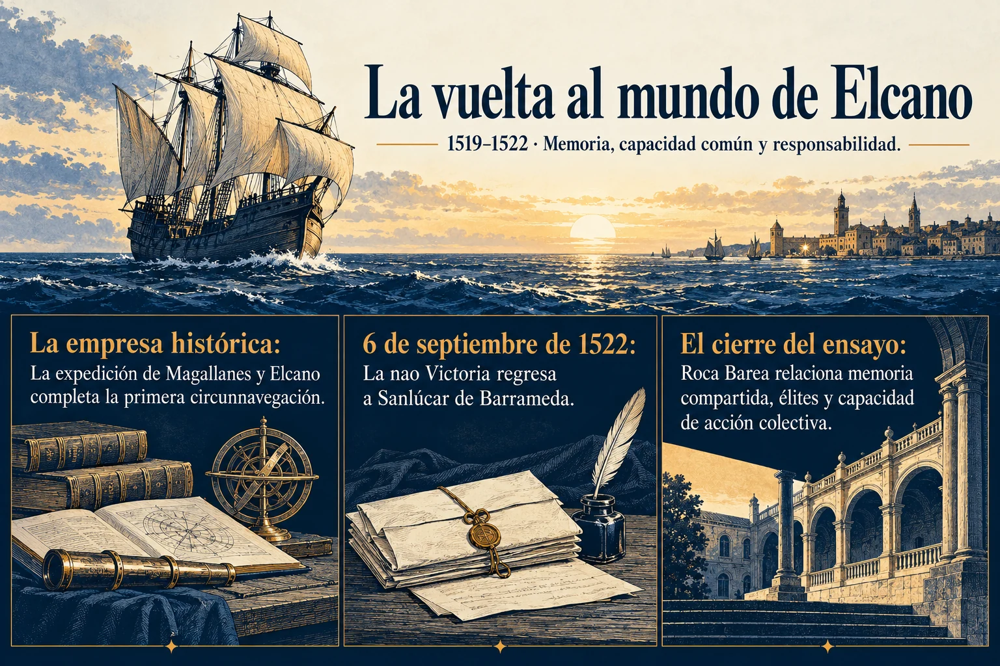

Los tratados de partición
Entrega 01 · La sucesión de Carlos II en el escenario europeo
Recorrido visual
Veintiún esquemas para acompañar la lectura. Cada lámina enlaza con su pasaje y ofrece una transcripción y referencias junto a la imagen.
Entrega 01 · La sucesión de Carlos II en el escenario europeo

Entrega 02 · La lectura de Roca Barea

Entrega 03 · Reinado: 1665–1700
Entrega 04 · Instituciones, comercio y élites según Roca Barea

Entrega 05 · Un mecanismo interpretativo de Fracasología

Entrega 07 · La interpretación de María Elvira Roca Barea

Entrega 08 · Hacia 1740–1789 · Artículo «Espagne»: 1782

Entrega 14 · La resistencia no se limita a la península

Entrega 15 · Cádiz: del nombramiento al trabajo constituyente
Entrega 18 · Don Preciso y Richard Ford en el ensayo

Entrega 29 · La crítica política y económica antes de los Borbones

Entrega 30 · El spoils system en el argumento de Roca Barea

Entrega 32 · Cifras recogidas por Roca Barea; no una serie estadística independiente

Entrega 33 · Historia, conocimiento y confianza colectiva

Entrega 34 · Dos planos del argumento histórico

Entrega 48 · La interpretación de Roca Barea en las entregas 48–49

Entrega 50 · Escuela, prestigio y memoria en Fracasología

Entrega 51 · La comparación que propone Roca Barea

Entrega 52 · La pregunta por la autoridad para juzgar

Entrega 53 · El mecanismo interpretativo de Roca Barea

Entrega 56 · 1519–1522 · Memoria, capacidad común y responsabilidad
Las imágenes exponen argumentos de Roca Barea y distinguen sus interpretaciones de las comprobaciones documentales indicadas. Las ilustraciones son conceptuales. No se reproducen como auténticos los mapas, retratos o facsímiles generados que contenían las versiones anteriores.
Los textos de las entregas se conservan íntegros. Las aclaraciones y los enlaces se añaden en bloques separados.